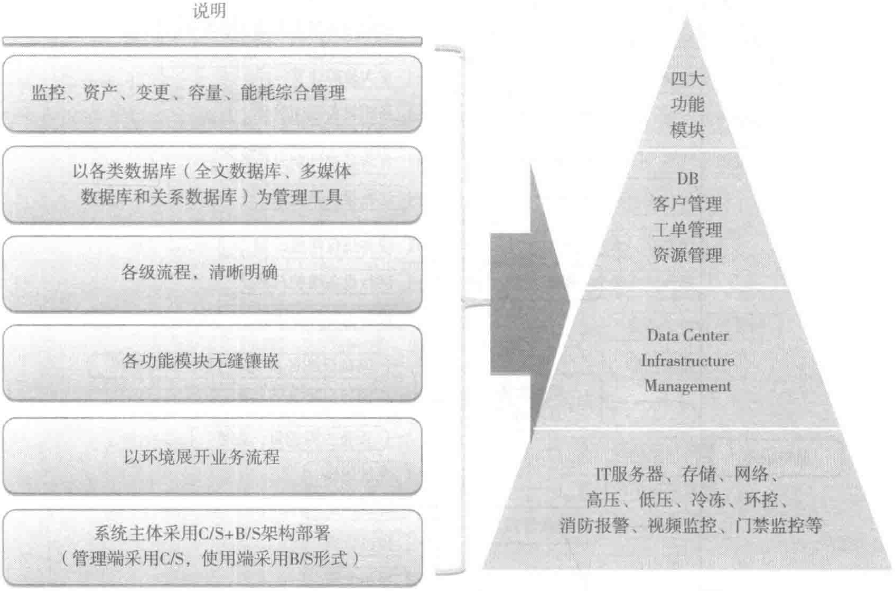

（1）园区系统平台架构
着眼数据中心园区的整体规划，系统采用“分布式”结构，满足全天24h运行，自动故障报警监测。系统能在分布式结构的基础上方便实现新设备、新子系统的接入。系统预留北向接口，为京东总部的数据中心云平台提供数据。具体架构如图10-58所示。

（2）基础设施模块功能
基础设施管理模块是集高压供电系统、低压UPS保障系统、冷水控制系统、环控系统、消防报警系统、视频监控系统、门禁系统等实时监控、操作为一体的操作平台。基础设施模块的构成如图10-59所示。
（3）客户服务模块功能
客服模块保证第一时间受理客户的需求，转发至相关责任部门进行下一步处理，并对工单进行记录跟进，确保IDC机房流程的顺畅。客户服务管理模块的构成如图10-60所示。
（4）客户自助服务模块功能
客户自服务模块支持客户对自有设备的查看，以及对IDC机房日常需求的申请发起。客户自服务模块功能如图10-61所示。